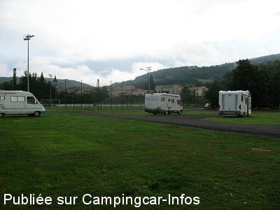
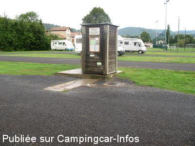
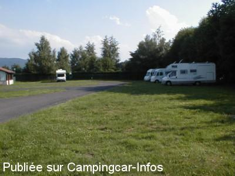
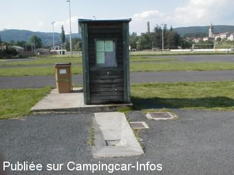

ASN = Aire de services avec stationnement nuit possible de :
SAINT ANTHÈME
(N° 368)
Accès/adresse :
Chemin de Rambaud
63660 SAINT ANTHÈME
63660 SAINT ANTHÈME
Latitude : (Nord) 45.52356° Décimaux ou 45° 31′ 24′′
Longitude : (Est) 3.91482° Décimaux ou 3° 54′ 53′′
Tarif : 2015
Stationnement, services : 5 €
Type de borne : Artisanale
Services :


Tous commerces
Autres informations :
Ouvert toute l'année
30 emplacements
Stationnement limité 24 H
Tel : +33(0)473 954 020

Le 03/01/2014 par DIDI 31

Le 03/01/2014 par DIDI 31

Le 29/06/2004 par Robert Artonne

Le 29/06/2004 par Robert Artonne
de
Roncin
le 12/05/2015 :
§ Si la commune a augmenté le tarif c'est peut-être pour une simple et bonne raison que beaucoup de caristes viennent faire le plein d'eau, faire les vidanges et repartent sans s'arrêter. Je connais parfaitement la région, je suis cariste mais le comportement de certains laissent pantois. Pourquoi ces petites communes de moyenne montagne (plus ou moins désertifiées) qui font un effort pour nous accueillir devraient subir l'incivisme de certains. 5 euros reste une somme raisonnable sachant que la personne chargée de faire payer ne passe pas tous les jours en dehors des mois d'affluence.
Merci à cette commune
§ Si la commune a augmenté le tarif c'est peut-être pour une simple et bonne raison que beaucoup de caristes viennent faire le plein d'eau, faire les vidanges et repartent sans s'arrêter. Je connais parfaitement la région, je suis cariste mais le comportement de certains laissent pantois. Pourquoi ces petites communes de moyenne montagne (plus ou moins désertifiées) qui font un effort pour nous accueillir devraient subir l'incivisme de certains. 5 euros reste une somme raisonnable sachant que la personne chargée de faire payer ne passe pas tous les jours en dehors des mois d'affluence.
Merci à cette commune
de
Dédé camping cariste local
le 27/09/2014 :
nous venions a cette aire plusieurs fois par an depuis de nombreuses années , principalement pour faire nos provisions de viande a la boucherie , cette augmentation me choque enormement 5 eurros ald 2 euros c'est enorme , beaucoup de petites communes
essayent d'attirer les camping-caristes en ouvrant des aires gratuites comme cela etait il y a quelques années ici , je ne suis pas contre de payer 2 euros pour une participation , c'est tout a fait normal mais maintenant c'est faire de l'argent sur le dos des camping-cars qui le plus souvent font travailler les commerces du village, je crois tout simplement qu' on ne veux plus de nous ici , st-Anthemes n'est pas la cote -d'azur il me semble , nous sommes aller a st-Anthemes il y a deux semaines pour faire nos provisions de viande , il y avait pas un seul camping-car sur l'aire , alors que d'habitude l'aire a beaucoup de monde.
nous venions a cette aire plusieurs fois par an depuis de nombreuses années , principalement pour faire nos provisions de viande a la boucherie , cette augmentation me choque enormement 5 eurros ald 2 euros c'est enorme , beaucoup de petites communes
essayent d'attirer les camping-caristes en ouvrant des aires gratuites comme cela etait il y a quelques années ici , je ne suis pas contre de payer 2 euros pour une participation , c'est tout a fait normal mais maintenant c'est faire de l'argent sur le dos des camping-cars qui le plus souvent font travailler les commerces du village, je crois tout simplement qu' on ne veux plus de nous ici , st-Anthemes n'est pas la cote -d'azur il me semble , nous sommes aller a st-Anthemes il y a deux semaines pour faire nos provisions de viande , il y avait pas un seul camping-car sur l'aire , alors que d'habitude l'aire a beaucoup de monde.
de
Fred Martin
le 30/08/2014 :
D'accord, l'eau et les vidanges sont comprises mais on en n'a pas besoin tous les jours. Alors 5 € juste pour se garer...
Pas d'électricité, pas vu de poubelles, pas de wifi et internet mobile quasi inutilisable (Bouygues).
D'accord, l'eau et les vidanges sont comprises mais on en n'a pas besoin tous les jours. Alors 5 € juste pour se garer...
Pas d'électricité, pas vu de poubelles, pas de wifi et internet mobile quasi inutilisable (Bouygues).
de
PAT 01
le 24/08/2014 :
§ Aire très bien entretenue, le tarif a changé cette année pour passer de 2€ la nuitée à 5€ ( les services restent gratuit)
§ Aire très bien entretenue, le tarif a changé cette année pour passer de 2€ la nuitée à 5€ ( les services restent gratuit)
de
lufloarsa
le 13/10/2013 :
soirée du 8 octobre 2013, temps gris, avons trouvé une aire très agréable, sur herbe,
proximité du village. Restaurant très agréable "Les Voyageurs" spécialités du pays très bien
soirée du 8 octobre 2013, temps gris, avons trouvé une aire très agréable, sur herbe,
proximité du village. Restaurant très agréable "Les Voyageurs" spécialités du pays très bien
de
niquette 17
le 19/08/2013 :
nous sommes passes par saint antheme par hasard, nous avons trouvé l'aire très agréable et très propre,le village très proche est joli, il y a dans ce village deux commerces à ne pas negliger entre autre, le boucher et ses spécialités, et la boulangerie, que le pain y est bon!!!!!!!!!!!!très bon séjour et le lendemain une brocante très animée et trés régionale.
nous sommes passes par saint antheme par hasard, nous avons trouvé l'aire très agréable et très propre,le village très proche est joli, il y a dans ce village deux commerces à ne pas negliger entre autre, le boucher et ses spécialités, et la boulangerie, que le pain y est bon!!!!!!!!!!!!très bon séjour et le lendemain une brocante très animée et trés régionale.
de
CHL
le 03/08/2011 :
Aire très agréable, calme. Nous vous conseillons de gouter le patia, spécialité du pays, au col des Supeyres, au restaurant très rustique : Le Coq Noir à 15minutes du village. (1400 mètres d'altitude). De plus, le volcan de Monpellou ainsi que le village de Viverolle sont à voir.
Aire très agréable, calme. Nous vous conseillons de gouter le patia, spécialité du pays, au col des Supeyres, au restaurant très rustique : Le Coq Noir à 15minutes du village. (1400 mètres d'altitude). De plus, le volcan de Monpellou ainsi que le village de Viverolle sont à voir.
de
GEGE
le 03/08/2010 :
Bonjour à tous et à toutes. les vidanges et l'approvisionnement en eau propre. La fréquentation modeste permet de prendre ses aises en laissant de la place entre chaque CC. Emplacements sur herbe et voies de circulation goudronnées, entre le stade et le camping pas de nuisances sonores particulières. Nous venons de passer une petite quinzaine fin juillet.
Le charmant village et tous les commerces sont à 500m, possibilité de randonnées pédestres et équestres sur les sentiers proches. La pèche est aussi possible dans la rivière l'ANSE à côté de l'aire.
Bon accueil de José qui est aussi le gérant du camping. Excellent accueil également de l'hotesse de l'office du tourisme. Oui, nous retournerons à St ANTHEME §
Bonjour à tous et à toutes. les vidanges et l'approvisionnement en eau propre. La fréquentation modeste permet de prendre ses aises en laissant de la place entre chaque CC. Emplacements sur herbe et voies de circulation goudronnées, entre le stade et le camping pas de nuisances sonores particulières. Nous venons de passer une petite quinzaine fin juillet.
Le charmant village et tous les commerces sont à 500m, possibilité de randonnées pédestres et équestres sur les sentiers proches. La pèche est aussi possible dans la rivière l'ANSE à côté de l'aire.
Bon accueil de José qui est aussi le gérant du camping. Excellent accueil également de l'hotesse de l'office du tourisme. Oui, nous retournerons à St ANTHEME §
de
Dafra 73
le 04/07/2009 :
Au pied d'un tranquille petit village avec commerces, (7mm à pied), près du camping municipal, du stade, d'une petite rivière, et d'un charmant plan d'eau aménagé, bel espace de stationnement herbeux, (20 CC env.), bien plat, avec éclairage, mais sans arbres sauf en limite de terrain. Services sur borne artisanale assez satisfaisante, (sauf bouche eaux noires très mal conçue). l'ensemble est gratuit, sauf juin/juillet/août où une participation de 2,00€ (stationnement et services) est à régler au responsable du camping. Endroit calme, sauf petite activité d'une modeste scierie voisine en journée.§
Au pied d'un tranquille petit village avec commerces, (7mm à pied), près du camping municipal, du stade, d'une petite rivière, et d'un charmant plan d'eau aménagé, bel espace de stationnement herbeux, (20 CC env.), bien plat, avec éclairage, mais sans arbres sauf en limite de terrain. Services sur borne artisanale assez satisfaisante, (sauf bouche eaux noires très mal conçue). l'ensemble est gratuit, sauf juin/juillet/août où une participation de 2,00€ (stationnement et services) est à régler au responsable du camping. Endroit calme, sauf petite activité d'une modeste scierie voisine en journée.§
de
Bosco claude
le 05/03/2009 :
Bonjour. Nous avons passé une nuit très calme et seuls sur l'aire. Il y a encore de la neige autour et le paysage environnant est superbe, ça donne envie de revenir.
Bonjour. Nous avons passé une nuit très calme et seuls sur l'aire. Il y a encore de la neige autour et le paysage environnant est superbe, ça donne envie de revenir.
de
GUTTON
le 07/05/2006 :
Le coin est très calme, au bord d'une rivière. L'ensemble des services était opérationnel et nous avons passé une excellente nuit.
Le coin est très calme, au bord d'une rivière. L'ensemble des services était opérationnel et nous avons passé une excellente nuit.